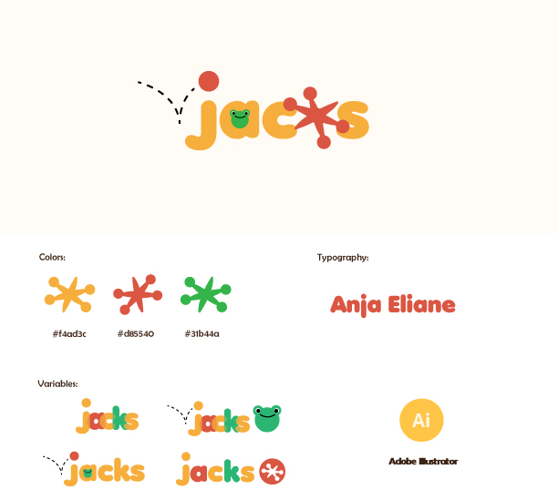

My Portfolio
Jacks
This project involves the development of a vibrant and
playful logo,
created to engage and appeal to kids.

The logo features colorful elements, with an emphasis on fun and creativity.
It symbolizes the excitement and joy of playing jacks, making it an attractive
logo for children. (Creative Digital Design - 2022)